Leafy greens
Lettuce
Layered leaves form a compact green rosette.
- planted
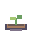
seedling- growing
- Harvest-ready
Lunar south pole / design-space explorer
Design a lunar farm, balance its life-support systems, and discover what it takes to keep growing.
FIELD STATION 01 · LUNAR SOUTH POLE
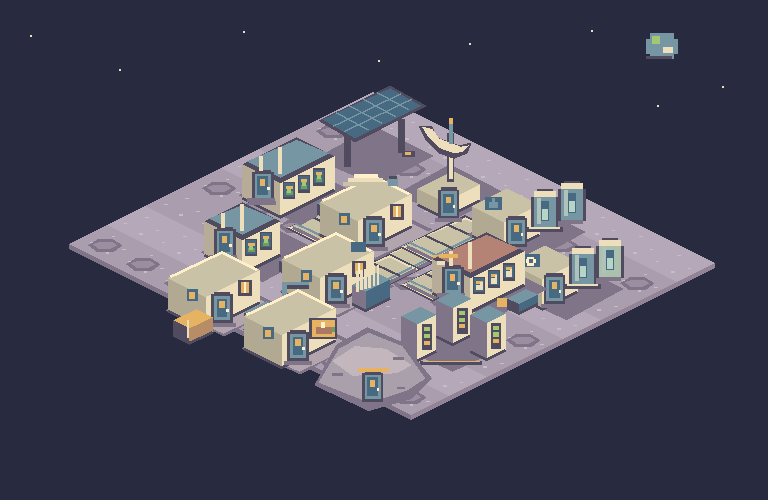
Within this simulation, agriculture is a simplified systems-engineering challenge. Large-animal lunar livestock is speculative; these game outcomes are not validated lunar farming predictions.
The crop illustrations show recognizable growth stages, not measured growth rates. Arabidopsis is presented as a research plant; sample readiness does not imply edible food production.
Water, light, temperature, and utility delivery are simplified in the game. Crop appearance does not change its simulated output.
NASA · Low-angle sunlight and shadowed terrain complicate south-pole exploration. This provides context for planning power and thermal support.
NASA · Terrain-based visualizations show changing sunlight and shadow near the pole. They motivate site-aware energy planning, not the game’s numerical power rules.
NASA · Local lighting and terrain shape a highly variable thermal environment. Indoor crop temperature in the game is a controlled condition, not the lunar surface temperature.
NASA · NASA’s closed-environment crop research contributed to indoor cultivation techniques. It frames the trade-offs between lighting, water delivery, and food production.
NASA · Ground-based closed-chamber tests studied crop growth and exchanges of gases and water, including lettuce, potato, and wheat. These experiments are context, not validation of the simulation’s yields or turn lengths.
NASA · Veggie and the Advanced Plant Habitat support plant research aboard the space station. Orbital growing experiments do not establish a complete lunar farm design.
NASA · Natural particles can damage exposed spacecraft systems. NASA studies different meteoroid environments, including the lunar environment; game impacts are simplified events.
NASA · LunaNet provides a framework for interoperable lunar communications and navigation services. It motivates the importance of connectivity; the Mission Control advisor is a fictional game experience.
ESA · MELiSSA investigates recovering food, water, and oxygen through linked biological and physical processes. It illustrates life-support interdependence without validating the game’s livestock model.
Greenhouse journal / six-crop art collection
From the first sprout to the last sample. Each stage has its own silhouette.
Leafy greens
Layered leaves form a compact green rosette.

seedlingRoot crop
A bright red bulb with a tiny pale root and lively leaves.
Fruiting crop
Bushy foliage carries hanging peppers that turn vivid red.
Tuber crop
Rounded leafy stems above golden-brown tubers, revealed in the harvest cutaway.
Legume
Upright stems carry broad leaves and chunky green pods.
Research plant
A delicate rosette, slender stems, and tiny white flowers mark a research sample.
Within this simulation, agriculture is a simplified systems-engineering challenge. Large-animal lunar livestock is speculative; these game outcomes are not validated lunar farming predictions.
The crop illustrations show recognizable growth stages, not measured growth rates. Arabidopsis is presented as a research plant; sample readiness does not imply edible food production.
Water, light, temperature, and utility delivery are simplified in the game. Crop appearance does not change its simulated output.
NASA · Low-angle sunlight and shadowed terrain complicate south-pole exploration. This provides context for planning power and thermal support.
NASA · Terrain-based visualizations show changing sunlight and shadow near the pole. They motivate site-aware energy planning, not the game’s numerical power rules.
NASA · Local lighting and terrain shape a highly variable thermal environment. Indoor crop temperature in the game is a controlled condition, not the lunar surface temperature.
NASA · NASA’s closed-environment crop research contributed to indoor cultivation techniques. It frames the trade-offs between lighting, water delivery, and food production.
NASA · Ground-based closed-chamber tests studied crop growth and exchanges of gases and water, including lettuce, potato, and wheat. These experiments are context, not validation of the simulation’s yields or turn lengths.
NASA · Veggie and the Advanced Plant Habitat support plant research aboard the space station. Orbital growing experiments do not establish a complete lunar farm design.
NASA · Natural particles can damage exposed spacecraft systems. NASA studies different meteoroid environments, including the lunar environment; game impacts are simplified events.
NASA · LunaNet provides a framework for interoperable lunar communications and navigation services. It motivates the importance of connectivity; the Mission Control advisor is a fictional game experience.
ESA · MELiSSA investigates recovering food, water, and oxygen through linked biological and physical processes. It illustrates life-support interdependence without validating the game’s livestock model.
Progressive / Establishment · sample turn 4
Layout locked
Presentation only. Controls do not resolve turns or alter a game.
Live telemetry
Production targets count total harvests, not remaining inventory.
Outlook / timing uncertain
An uncertain outlook, not an event schedule.
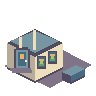
Grow crops in a controlled environment. Balance water, light, and temperature.
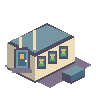
Grow crops in a controlled environment. Balance water, light, and temperature.
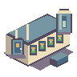
Grow crops in a controlled environment. Balance water, light, and temperature.
● online
Remote advisory / limited telemetry
Mission Control is preparing a response…
● offline
Remote advisory / limited telemetry
Use local system readings. Advice resumes when communications recover.
● unavailable
Remote advisory / limited telemetry
Mission Control temporarily unavailable. Your mission can continue.
External conditions can strain thermal control.
Inspect temperature and thermal allocation.
CRITICAL SYSTEM FAILURE
Water supply is critical.
Restore critical systems by turn 5.
Critical systems recovered. Your mission continues.
Critical water supply was not restored in the recovery turn.
Every run is a chance to understand the trade-offs.
Greenhouse 01
Livestock 01
Water Delivery low
Temperature Nominal
Utility 01
Small reallocations cost AP and apply immediately.
Repair keeps the existing layout intact.
Integrity 65%
Within this simulation, agriculture is a simplified systems-engineering challenge. Large-animal lunar livestock is speculative; these game outcomes are not validated lunar farming predictions.
The crop illustrations show recognizable growth stages, not measured growth rates. Arabidopsis is presented as a research plant; sample readiness does not imply edible food production.
Water, light, temperature, and utility delivery are simplified in the game. Crop appearance does not change its simulated output.
NASA · Low-angle sunlight and shadowed terrain complicate south-pole exploration. This provides context for planning power and thermal support.
NASA · Terrain-based visualizations show changing sunlight and shadow near the pole. They motivate site-aware energy planning, not the game’s numerical power rules.
NASA · Local lighting and terrain shape a highly variable thermal environment. Indoor crop temperature in the game is a controlled condition, not the lunar surface temperature.
NASA · NASA’s closed-environment crop research contributed to indoor cultivation techniques. It frames the trade-offs between lighting, water delivery, and food production.
NASA · Ground-based closed-chamber tests studied crop growth and exchanges of gases and water, including lettuce, potato, and wheat. These experiments are context, not validation of the simulation’s yields or turn lengths.
NASA · Veggie and the Advanced Plant Habitat support plant research aboard the space station. Orbital growing experiments do not establish a complete lunar farm design.
NASA · Natural particles can damage exposed spacecraft systems. NASA studies different meteoroid environments, including the lunar environment; game impacts are simplified events.
NASA · LunaNet provides a framework for interoperable lunar communications and navigation services. It motivates the importance of connectivity; the Mission Control advisor is a fictional game experience.
ESA · MELiSSA investigates recovering food, water, and oxygen through linked biological and physical processes. It illustrates life-support interdependence without validating the game’s livestock model.
Select a control to inspect its presentation. All values above are illustrative.
Mission archive / MoonGardener · illustrative run
01
This example outpost completed ten turns and met both cumulative production targets.
02
Crop and meat targets were achieved in this illustrative mission.
03
A brief water-delivery crisis was followed by recovery. Review the turn history to understand the sequence.
04
The example uses a compact growing area close to supporting utilities.
05
Repairs supported recovery during the mission. A single run cannot establish which intervention was decisive.
06
Lettuce supplied early harvests. Livestock represents a simplified, speculative lunar food-production trade-off.
07
The advisor suggested reviewing delivery paths. During the outage, the player relied on local readings.
08
Controlled-environment growing research motivates the game’s emphasis on water, light, and temperature. Real experimental results do not validate these game settings.
09
Your strategy suggests a preference for short delivery paths and recovery capacity within this simulation. Comparisons among player runs can suggest hypotheses for further exploration.
NASA · Terrain-based visualizations show changing sunlight and shadow near the pole. They motivate site-aware energy planning, not the game’s numerical power rules.
NASA · Ground-based closed-chamber tests studied crop growth and exchanges of gases and water, including lettuce, potato, and wheat. These experiments are context, not validation of the simulation’s yields or turn lengths.
ESA · MELiSSA investigates recovering food, water, and oxygen through linked biological and physical processes. It illustrates life-support interdependence without validating the game’s livestock model.
Mission records
| Rank | Nickname | Mode | Result | Score |
|---|---|---|---|---|
| 1 | MoonGardener · sampleYour run | progressive | PASS | 82 |
Mission records
| Rank | Nickname | Mode | Result | Score |
|---|---|---|---|---|
| 1 | MoonGardener · sampleYour run | progressive | PASS | 24 |
Mission records
| Rank | Nickname | Mode | Result | Score |
|---|---|---|---|---|
| 1 | MoonGardener · sampleYour run | progressive | PASS | 21 |
Mission records
| Rank | Nickname | Mode | Result | Score |
|---|---|---|---|---|
| 1 | MoonGardener · sampleYour run | progressive | PASS | 6 |
Mission records
| Rank | Nickname | Mode | Result | Score |
|---|---|---|---|---|
| 1 | MoonGardener · sampleYour run | progressive | PASS | 5 |
Illustrative row only. No leaderboard record was submitted.
Shared field notes
Observed among completed player runs. Patterns describe this dataset; they do not establish cause and effect.
24 completed runs in this sample
Distances reflect the recorded grid layout, not measured water delivery.
Illustrative dataset, not observed production data.
Original pixel placeholders / 32 × 32
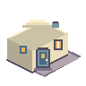
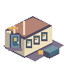
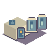
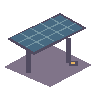
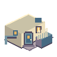
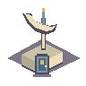
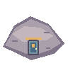
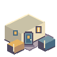
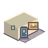
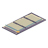
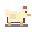
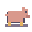
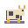
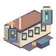
Within this simulation, agriculture is a simplified systems-engineering challenge. Large-animal lunar livestock is speculative; these game outcomes are not validated lunar farming predictions.
The crop illustrations show recognizable growth stages, not measured growth rates. Arabidopsis is presented as a research plant; sample readiness does not imply edible food production.
Water, light, temperature, and utility delivery are simplified in the game. Crop appearance does not change its simulated output.
NASA · Low-angle sunlight and shadowed terrain complicate south-pole exploration. This provides context for planning power and thermal support.
NASA · Terrain-based visualizations show changing sunlight and shadow near the pole. They motivate site-aware energy planning, not the game’s numerical power rules.
NASA · Local lighting and terrain shape a highly variable thermal environment. Indoor crop temperature in the game is a controlled condition, not the lunar surface temperature.
NASA · NASA’s closed-environment crop research contributed to indoor cultivation techniques. It frames the trade-offs between lighting, water delivery, and food production.
NASA · Ground-based closed-chamber tests studied crop growth and exchanges of gases and water, including lettuce, potato, and wheat. These experiments are context, not validation of the simulation’s yields or turn lengths.
NASA · Veggie and the Advanced Plant Habitat support plant research aboard the space station. Orbital growing experiments do not establish a complete lunar farm design.
NASA · Natural particles can damage exposed spacecraft systems. NASA studies different meteoroid environments, including the lunar environment; game impacts are simplified events.
NASA · LunaNet provides a framework for interoperable lunar communications and navigation services. It motivates the importance of connectivity; the Mission Control advisor is a fictional game experience.
ESA · MELiSSA investigates recovering food, water, and oxygen through linked biological and physical processes. It illustrates life-support interdependence without validating the game’s livestock model.